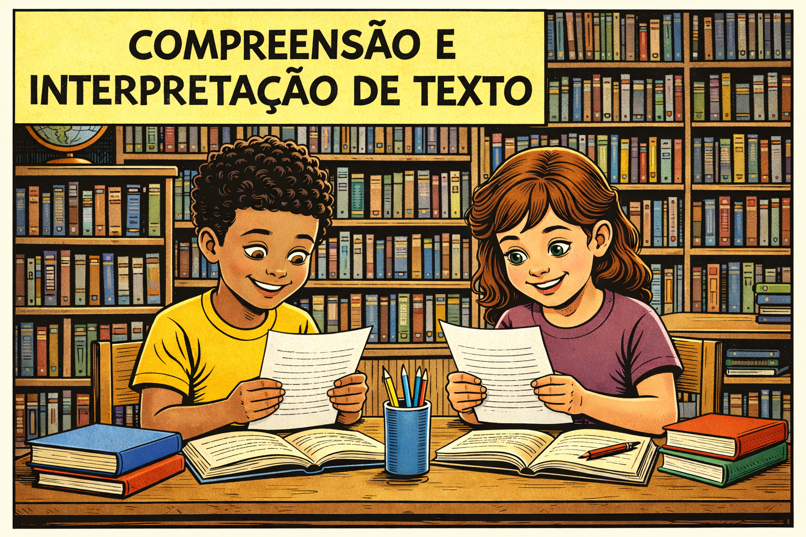

📚 Histórias para Interpretar

Iniciar
Jogador:
|
Pontuação:
0
|
Vidas:
3
Carregando história...
Próxima história
🎉 Parabéns,
!
Você terminou com
ponto(s)
!
📥 Baixar Boletim PDF
🔄 Jogar Novamente
➡️ Finalizar Módulos
💔 Você perdeu! Que tal tentar novamente?
🔄 Tentar Novamente